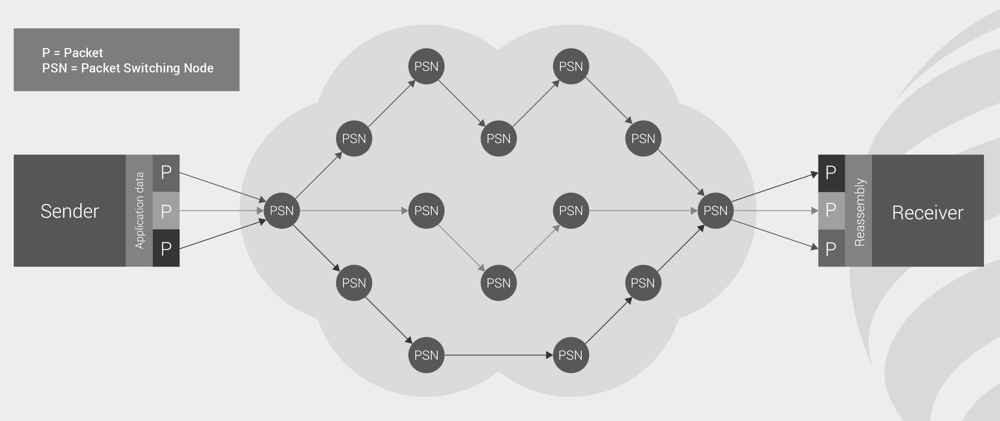
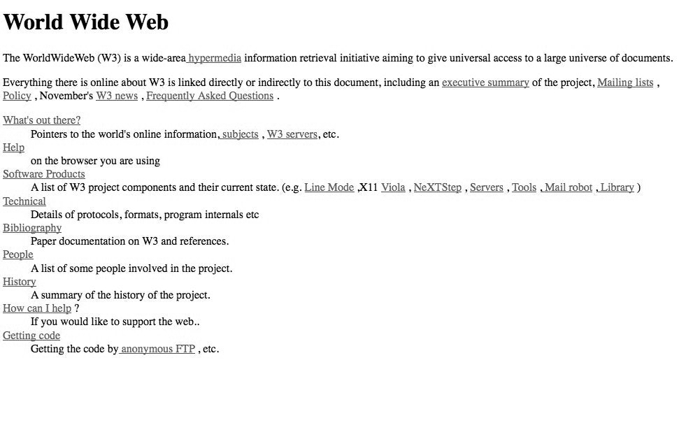

How has Sir Tim Berners-Lee changed how we communicate today?
The World Wide Web (WWW) is a global networked environment of interconnected documents and data, accessible through the internet. (McPherson, 2010). This essay will discuss one of the most innovative inventors in history – UK computer scientist Sir Tim Berners-Lee. Who is he? How did we communicate before the World Wide Web? Did Tim Berners-Lee change how we communicate today? Sir Tim Berners-Lee had a goal, his goal was to allow people to communicate freely with each other using computers. He wanted this to be easier to do rather than going up to somebody and asking them to go for coffee (Berners-Lee and Fischetti, 1999).
Click image below to go to relative section:
The Man
Berners-Lee was born on June 8, 1955 and grew up in London. He went to Oxford University and obtained a first-class degree in Physics before beginning work at CERN (European Organisation for Nuclear Research) one of the world’s largest scientific research centres (McPherson, 2010). Berners-Lee was always fascinated by computers; at a young age he loved playing with toy trains. He recalls: “I made some electronic gadgets to control the trains. Then I ended up getting more interested in electronics than trains. Later on, when I was in college, I made a computer out of an old television set.” (World Wide Web Foundation, 2018). He is currently the director of the World Wide Web Consortium (W3C), a web standards organisation founded in 1994 which develops software, guidelines, specifications and tools to lead the web to its full potential (World Wide Web Consortium (W3C), 2019).
Portrait of Sir Tim Berners-Lee
The Beginning
In 1945, Dr Vennaver Bush said “Consider a future device … in which an individual stores all his books, records, and communications, and which is mechanized so that it may be consulted with exceeding speed and flexibility. It is an enlarged intimate supplement to his memory.” (Bush, 1945). This is the first record of anybody considering the idea of the internet. American inventor Douglas Engelbart read the above quote and had a vision to use computing more effectively, he realised you could use computers not just for schools and business but also for personal use. With this idea he designed the first GUI and the first mouse (Hall, 2019).
The First Mouse
ARPANET
DARPA (Defence Advanced Research Projects Agency) created a plan to connect computers together for use in the US military. They originally did this through telephone lines and realised that it wasn’t necessary to use three teletype machines to communicate with three incompatible computer systems. Tech pioneer Robert Taylor created a more efficient and effective idea to communicate by using a single protocol that could merge these three terminals into one. This project was called ARPANET (The Advanced Research Projects Agency Network) although for this to work, engineer Paul Baran developed the concept of ‘hot-potato routing’ which later became known as packet switching (RAND Corporation, 2009). This allowed larger files to be shared wirelessly between different computers by breaking them down into ‘packets’ which are clusters of information that are reduced in size and meet together at the destination computer fully merged again (Mitchell, 2019).

An example of Packet Switching
The History
Prior to the internet, computers were connected using dedicated cables from one computer to the other- a software program on one computer could communicate with a software program on the other computer by sending files or programs. However, one computer could not communicate with many other computers as this would require too many wires. The internet was utilised by the 1970’s, but transferring information was too complicated for a non-computer expert. (Berners-Lee and Fischetti, 1999). In 1971 when electronic mail (E-mail) was invented by computer engineer Ray Tomlinson it allowed messages to be sent from one person to the other. Universities in different countries started connecting with each other through email which was considered the beginning of the internet (Swatman, 2015).
There is a difference between the internet and the World Wide Web. The internet came around 18 years before the World Wide Web was invented. It is a global network of networks whereas the World Wide Web is a collection of information which is accessible via the internet (Berners-Lee, Hall and Hendler, 2006).
Hypertext was invented in 1965 by Theodore Nelson. It is text that links to other information online. By clicking on a link in a hypertext document, a user can quickly jump to different content (Christennson, 2006). The first ISP (Internet Service Provider) was invented in 1974 when people wanted their home computers to connect to the internet, this required a particular protocol which was when TCP/IP (Transmission Control Protocol/ Internet Protocol) was created. Every device that connected to the internet required a unique IP address. In 1983 a domain naming system was put in place which assigned domain names to IP addresses to make them easier to read for the non-computer expert. IP addresses went from looking like this ‘50.63.201.97’ to looking like this ‘www.domain.com’ which is much more readable to the human eye (Cloudflare, 2019).
Example of a domain name compared to an IP address
The Breakthrough
Berners-Lee soon realised you could share information using Nelson’s hypertext so in March 1989, he came up with a proposal for CERN called ‘Information Management: A Proposal’ writing on it ‘vague but exciting…’ (World Wide Web Foundation, 2018). He continued to work on this project for years and faced many challenges along the way, but he was determined that he was on the right track as he continued to learn more about the internet and hypertext. Berners-Lee says “The web arose as the answer to an open challenge through the swirling together of influences, ideas and realisations from many sides, until by the wondrous offices of the human mind, a new concept jelled…People found it difficult to understand that there was nothing else beyond URI’s, HTTP and HTML. There was no central computer ‘controlling’ the web. It was not a physical ‘thing’ that existed in a certain ‘place’. It was a ‘space’ in which information could exist” (Berners-Lee and Fischetti, 1999).

The Proposal Tim Berners-Lee submitted to CERN
The Web
This wasn’t a simple project, there were many fundamental inventions needed before the ‘World Wide Web’ could officially be the ‘World Wide Web’. His first objective was to write a web client. Secondly, he had to figure out how to turn text into hypertext (HTTP- Hypertext Transfer Protocol), he wrote the code for the language computers would use to communicate over the web (HTML- Hypertext Markup Language) and also invented URI’s (Uniform Resource Identifier). These remain the foundation of the web today.
By the end of the 1990’s on Christmas Day, Berners-Lee had invented the first web page which is also still responsive today. Following this came the first web browser created by Berners-Lee in 1990 which was called ‘WorldWideWeb’ this was later renamed ‘Nexus’ to differentiate from the actual World Wide Web. However, Berners-Lee’s browser only worked on NeXT machines, so this was the only way to access the web (McPeak, 2018). The ‘line-mode’ browser was written by Nicola Pellow who was a student doing work placement at CERN, this was easy to install and run on any platform, but it was restricted in power and user-friendliness (CERN, 2019).
Shortly after this, people i.e. university students and businesses (providing they had the correct knowledge and skills) started to invent multiple different browsers that weren’t responsive to everybody’s computers. Notable amongst these were ‘Viola’ by Pei Wei who was a student at U.C Berkely and ‘Erwise’ by Finnish students from Helsinki University of Technology (CERN, 2019). Browsers began to spread but they didn’t include writing and editing functions therefore the web could be used globally but less as a collaborative medium (Berners-Lee and Fischetti, 1999). This wasn’t the point of Berners-Lee’s invention. He had always intended for the web to be a globally accessible and collaborative project - hence ‘World Wide Web’.
Four short years later, Berners-Lee left CERN and founded the ‘International World Wide Web Consortium’ (W3C) to work on web standards which made it easier for content makers to stick to the same criteria which therefore made the web a more accessible place for all, reducing development and maintenance time and allowing for backwards compatibility and validation.

The first web page by Tim Berners-Lee
Conclusion
In conclusion, The World Wide Web has changed our lives for the better. The invention of the web will forever be an important and permanent part of our history. The web is used for communication/ linking people together which expands opportunities for not only personal use but also for business and innovation. Tim Berners-Lee with the help of a number of creative intellects and an eager drive to complete a project he believed in has definitely changed how we communicate today. Berners-Lee stated “many things could have gone wrong. It could have faded away, been replaced by a different system, have fragmented, or changed its nature so that it ceased to exist as a universal medium” (Berners-Lee and Fischetti, 1999). Except it didn’t, the web has continued to evolve, and it is exactly what Berners-Lee envisioned it to be - a universal medium for free sharing of information.